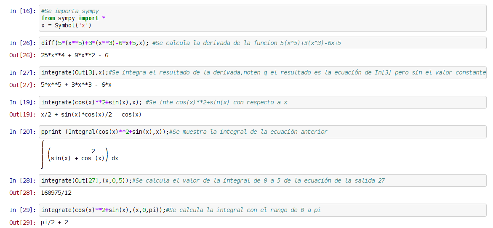

Cálculo de Integrales con Sympy
Publicado el sáb 21 febrero 2015 en Tutorial Python • 1 min de lectura
Contiuando con los artículos sobre la librería Sympy, en los artículos anteriores se toco lo siguiente:
En este artículo se tocará el tema de cálculo de Integrales.
A continuación se ejecuta ipython notebook (si desea cargar el archivo del notebook de este artículo lo puede bajar del siguiente enlace).
El script del tutorial de muestra a continuación:
# coding: utf-8
# In[16]:
#Se importa sympy
from sympy import *
x = Symbol('x')
# In[26]:
diff(5*(x**5)+3*(x**3)-6*x+5,x); #Se calcula la derivada de la funcion 5(x^5)+3(x^3)-6x+5
# In[27]:
integrate(Out[3],x);#Se integra el resultado de la derivada,noten q el resultado es la ecuación de In[3] pero sin el valor constante
# In[19]:
integrate(cos(x)**2+sin(x),x); #Se inte cos(x)**2+sin(x) con respecto a x
# In[20]:
pprint (Integral(cos(x)**2+sin(x),x));#Se muestra la integral de la ecuación anterior
# In[28]:
integrate(Out[27],(x,0,5));#Se calcula el valor de la integral de 0 a 5 de la ecuación de la salida 27
# In[29]:
integrate(cos(x)**2+sin(x),(x,0,pi));#Se calcula la integral con el rango de 0 a pi
La imagen de la ejecución del notebook se muestra a continuación:

Para una mejor visualización del ejercicio recomiendo ejecutar el notebook del enlace anterior.
¡Haz tu donativo! Si te gustó el artículo puedes realizar un donativo con Bitcoin (BTC) usando la billetera digital de tu preferencia a la siguiente dirección: 17MtNybhdkA9GV3UNS6BTwPcuhjXoPrSzV
O Escaneando el código QR desde la billetera: